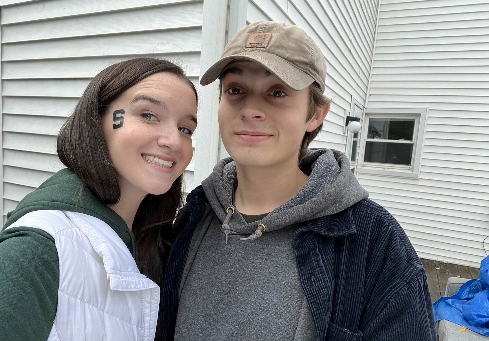

Just a few blog posts and pictures

Here's a picture of me and my sister a few weeks ago on gameday.
I grew up in Grand Blanc, Michigan, it is located directly south of Flint. Although Grand Blanc isn't the biggest town, the high school was huge. Every day that I went to school, I would see someone that I have never seen before. After graduating High School, I decided to go to Michigan State University. I started with majoring in Pre-Dental, but quickly realized that I didn't want to pursue that. After looking at a few different options, I decided to go with Information Science. I was interested in the more Human side of technology, and was intrigued by the idea of being able to work with both technology and people. I am due to graduate at the end of Summer 2023.